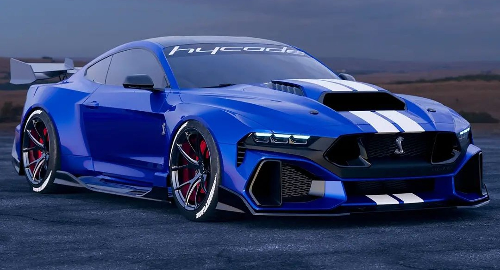

New
who is cooler, a car with an internal combustion engine, or an electric car?
given the number of filling stations in relation to charging stations, the conclusion is obvious...
given the number of filling stations in relation to charging stations, the conclusion is obvious...